オーストラリア・クイーンズランド州東南端
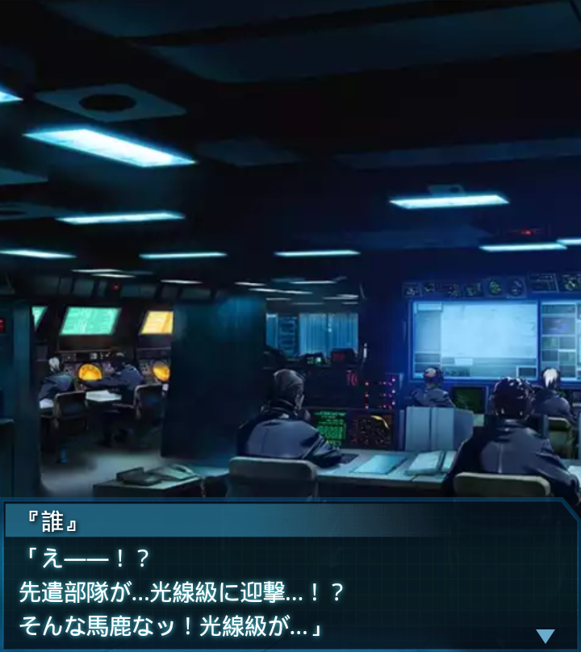
『誰』
「え――！？
先遣部隊が…光線級に迎撃…！？
そんな馬鹿なッ！光線級が…」
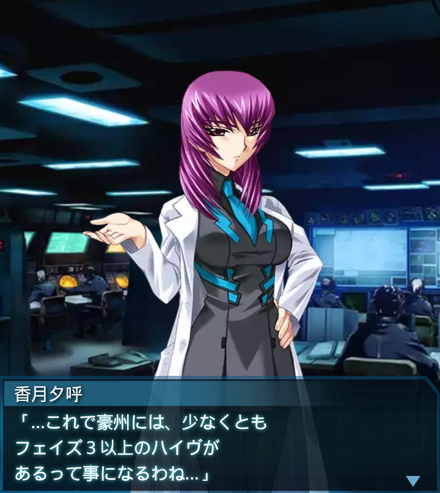
香月夕呼
「…これで豪州には、少なくとも
フェイズ３以上のハイヴが
あるって事になるわね…」
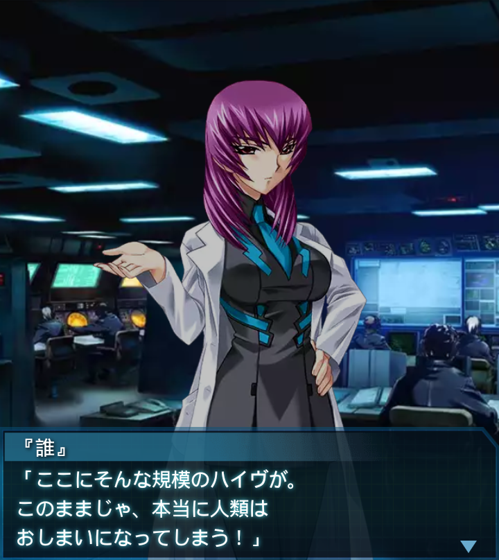
『誰』
「ここにそんな規模のハイヴが。
このままじゃ、本当に人類は
おしまいになってしまう！」
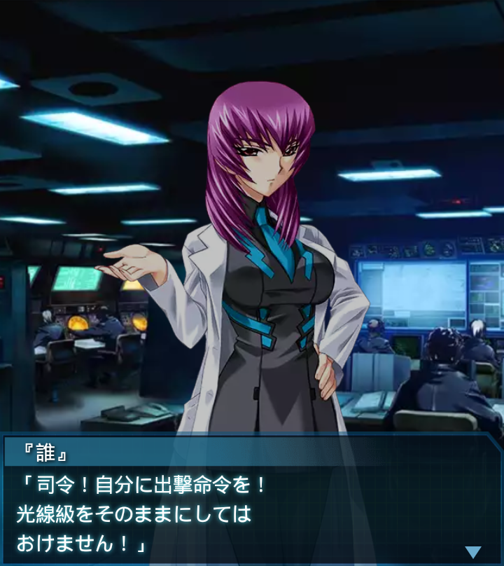
『誰』
「司令！自分に出撃命令を！
光線級をそのままにしては
おけません！」
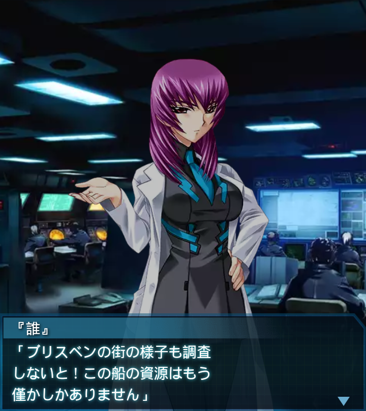
『誰』
「ブリスベンの街の様子も調査
しないと！この船の資源はもう
僅かしかありません」
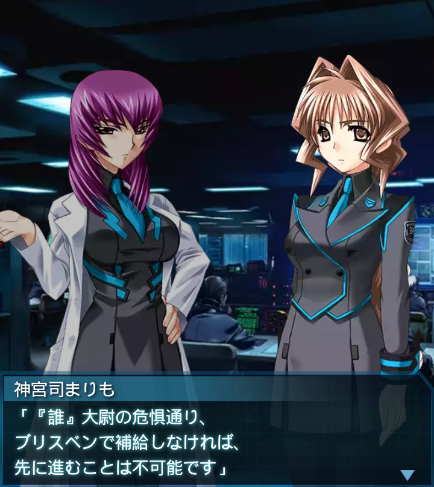
神宮司まりも
「『誰』大尉の危惧通り、
ブリスベンで補給しなければ、
先に進むことは不可能です」
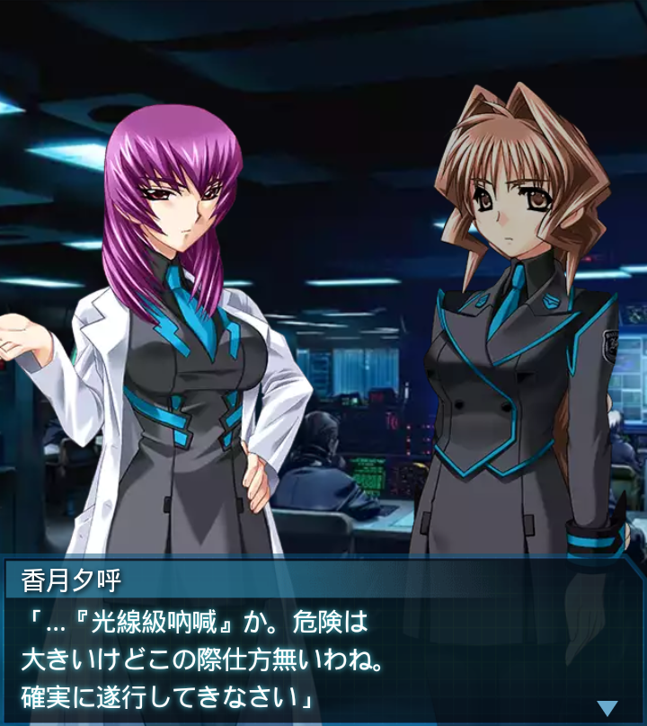
香月夕呼
「…『光線級吶喊』か。危険は
大きいけどこの際仕方無いわね。
確実に遂行してきなさい」
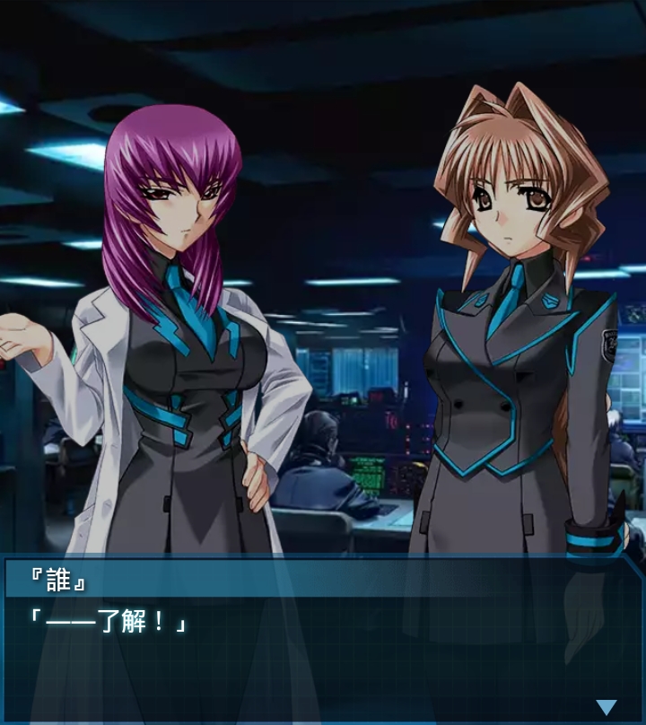
『誰』
「――了解！」
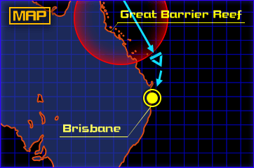
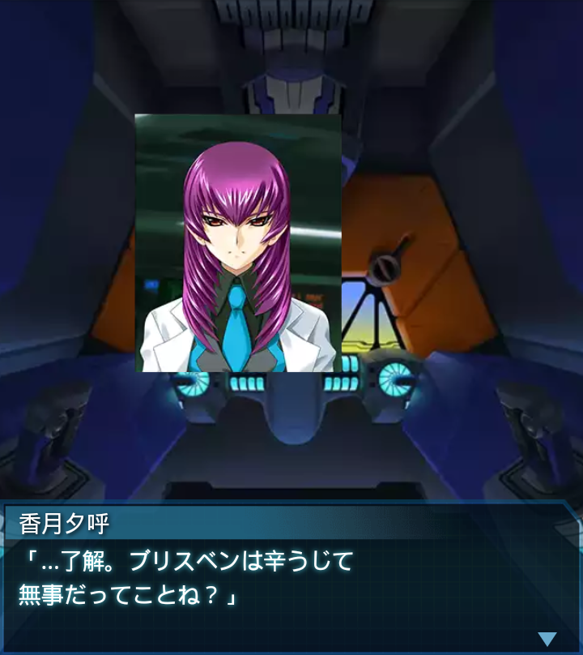
香月夕呼
「…了解。ブリスベンは辛うじて
無事だってことね？」
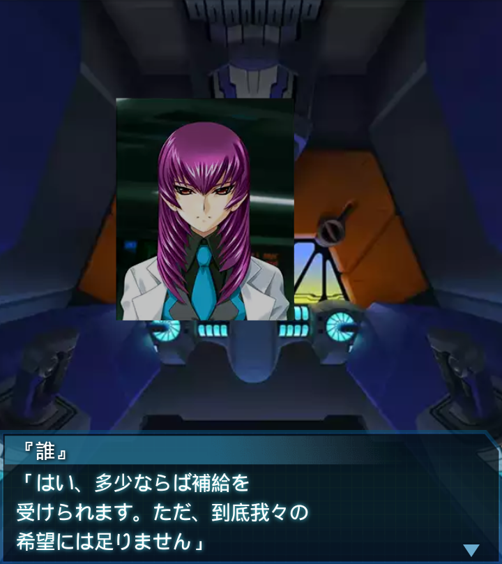
『誰』
「はい、多少ならば補給を
受けられます。ただ、到底我々の
希望には足りません」
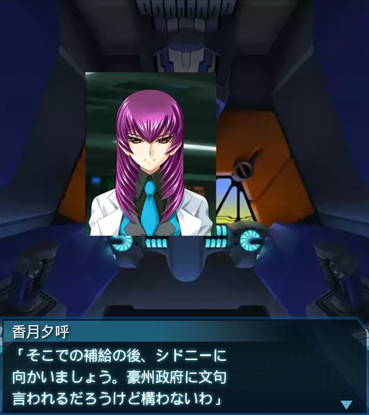
香月夕呼
「そこでの補給の後、シドニーに
向かいましょう。豪州政府に文句
言われるだろうけど構わないわ」
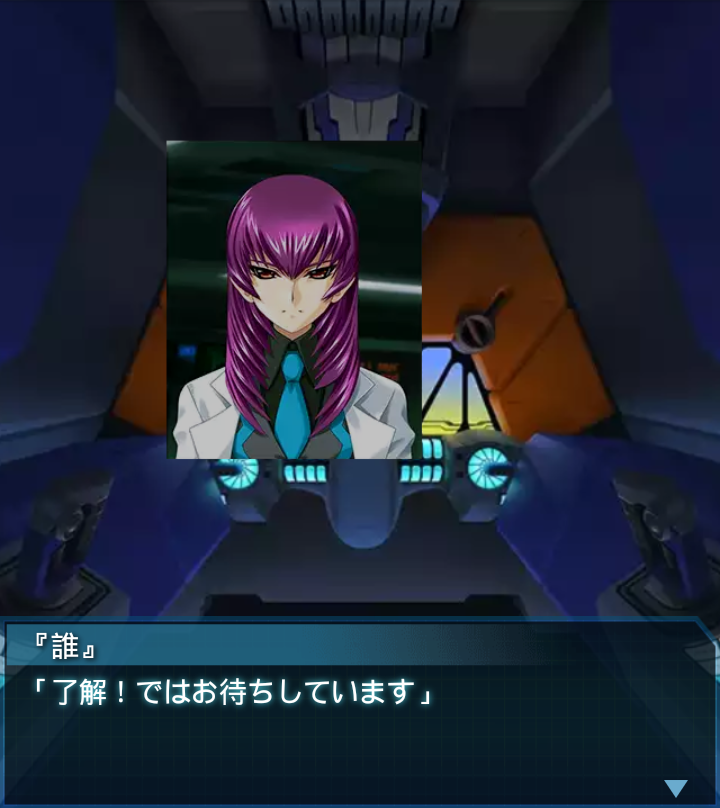
『誰』
「了解！ではお待ちしています」
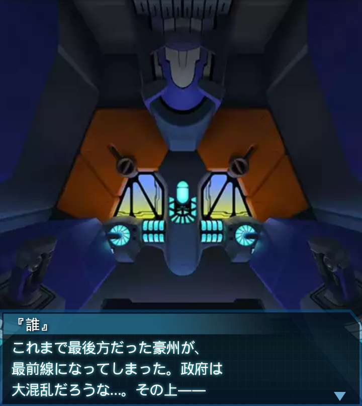
『誰』
これまで最後方だった豪州が、
最前線になってしまった。政府は
大混乱だろうな…。その上――

『誰』
大切な物資を俺達が持って
行ってしまう…。文句が出るのも
当然だろう。
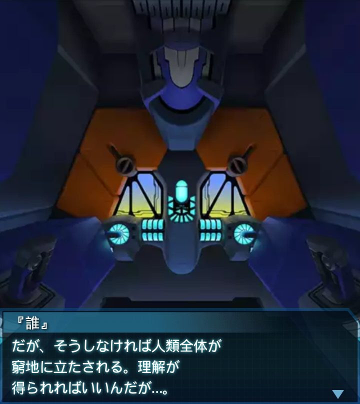
『誰』
だが、そうしなければ人類全体が
窮地に立たされる。理解が
得られればいいんだが…。